第十二章 CAN
12.1 CAN总线基本概念¶
12.1.1 CAN总线简介¶
- CAN总线（Controller Area Network Bus）控制器局域网总线
- CAN总线是由BOSCH公司开发的一种简洁易用、传输速度快、易扩展、可靠性高的串行通信总线，广泛应用于汽车、嵌入式、工业控制等领域
- CAN总线特征：
- 两根通信线（CAN_H、CAN_L），线路少 差分信号通信，抗干扰能力强
- 高速CAN（ISO11898）：125k~1Mbps, <40m
- 低速CAN（ISO11519）：10k~125kbps, <1km
- 异步，无需时钟线，通信速率由设备各自约定
- 半双工，可挂载多设备，多设备同时发送数据时通过仲裁判断先后顺序
- 11位/29位报文ID，用于区分消息功能，同时决定优先级
- 可配置1~8字节的有效载荷
- 可实现广播式和请求式两种传输方式
- 应答、CRC校验、位填充、位同步、错误处理等特性
各大主流通信协议对比：
| 名称 | 引脚 | 双工 | 时钟 | 电平 | 设备 | 应用场景 |
|---|---|---|---|---|---|---|
| UART | TX、RX | 全双工 | 异步 | 单端 | 点对点 | 两个设备互相通信 |
| I2C | SCL、SDA | 半双工 | 同步 | 单端 | 多设备 | 一个主控外挂多个模块 |
| SPI | SCK、MOSI、MISO、SS | 全双工 | 同步 | 单端 | 多设备 | 一个主控外挂多个模块（高速） |
| CAN | CAN_H、CAN_L | 半双工 | 异步 | 差分 | 多设备 | 多个主控互相通信 |
12.1.2 CAN硬件电路¶
- 每个设备通过CAN收发器挂载在CAN总线网络上
- CAN控制器引出的TX和RX与CAN收发器相连，CAN收发器引出的CAN_H和CAN_L分别与总线的CAN_H和CAN_L相连
- 高速CAN使用闭环网络，CAN_H和CAN_L两端添加120Ω的终端电阻
- 低速CAN使用开环网络，CAN_H和CAN_L其中一端添加2.2kΩ的终端电阻
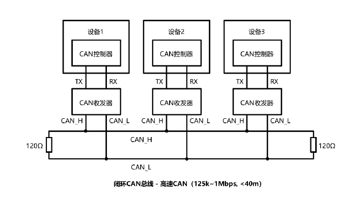
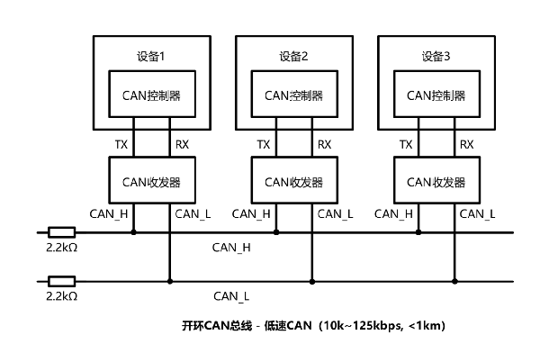
12.1.3 CAN的电平标准¶
- CAN总线采用差分信号，即两线电压差（V_H - V_L）传输数据位
-
高速CAN规定：
- 电压差为0V时表示逻辑1（隐性电平）
- 电压差为2V时表示逻辑0（显性电平）
- 低速CAN规定：
- 电压差为-1.5V时表示逻辑1（隐性电平）
- 电压差为3V时表示逻辑0（显性电平）
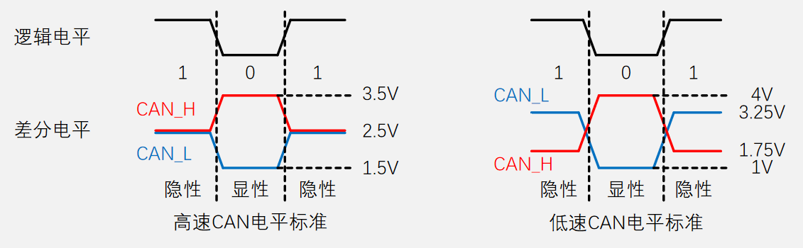
12.1.4 高低速CAN不同点¶
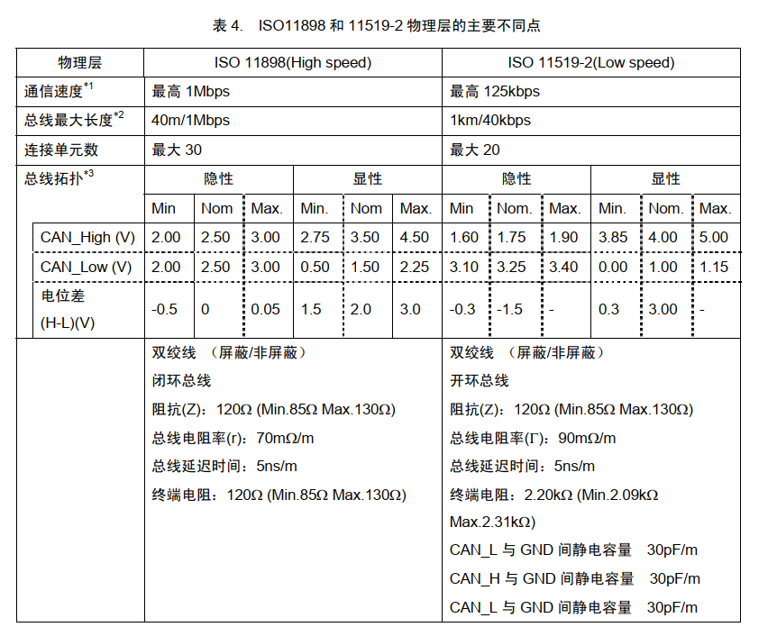
12.2 CAN总线协议¶
12.2.1 帧格式¶
CAN总线定义了 5 种帧格式：
| 帧类型 | 用途 |
|---|---|
| 数据帧 | 发送设备主动发送数据（广播式） |
| 遥控帧 | 接收设备主动请求数据（请求式） |
| 错误帧 | 某个设备检测出错误时向其他设备通知错误 |
| 过载帧 | 接收设备通知其尚未做好接收准备 |
| 帧间隔 | 用于将数据帧及遥控帧与前面的帧分离开 |
Danger
其中 数据帧 最为重要且复杂，遥控帧与数据帧类似，其他了解即可。
- 数据帧
数据帧的构成如下图，其中灰色部分(D)表示 Dominant：显性电平 0 ；白色部分(R)表示 Recessive：隐性电平 1 ；紫色部分为发送数据，电平高低按实际数据；数字表示该字段的数据位数(bit)。
扩展格式是对标准格式的升级，用于解决ID位数不够用的情况，然标准格式的优先级要高于扩展格式。

上图中的一些重要名称含义如下：
- SOF（Start of Frame）：帧起始，表示后面一段波形为传输的数据位。
- ID（Identify）：标识符，区分功能，同时决定优先级。
- RTR（Remote Transmission Request ）：远程请求位，区分数据帧和遥控帧。
- IDE（Identifier Extension）：扩展标志位，区分标准格式和扩展格式。
- SRR（Substitute Remote Request）：替代RTR，协议升级时留下的无意义位。
- r0/r1（Reserve）：保留位，为后续协议升级留下空间。
- DLC（Data Length Code）：数据长度，指示数据段有几个字节。
- Data：数据段的1~8个字节有效数据。
- CRC（Cyclic Redundancy Check）：循环冗余校验，校验数据是否正确。
- ACK（Acknowledgement）：应答位，判断数据有没有被接收方接收。
- CRC/ACK界定符：为应答位前后发送方和接收方释放总线留下时间。
- EOF（End of Frame ）：帧结束，表示数据位已经传输完毕。
- 遥控帧
遥控帧用于请求式，其中与数据帧不同在于 RTR 为 隐性电平 1 ，接收方收到后以遥控帧格式解析，然后发送相同数据ID的数据帧。当遥控帧请求和数据帧反馈同时发生时，数据帧优先级更高。
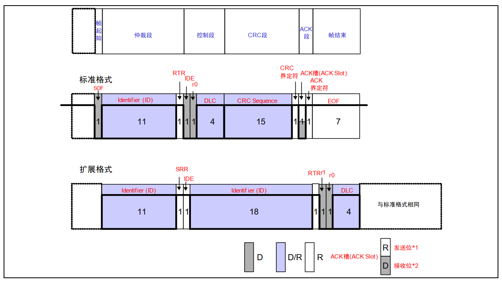
- 错误帧
总线上所有设备都会监督总线的数据，一旦发现 “位错误” 或 “填充错误” 或 “CRC错误” 或 “格式错误” 或 “应答错误” ，这些设备便会发出错误帧来破坏数据，同时终止当前的发送设备。
错误标志包括主动错误标志和被动错误标志两种，最后还有错误界定符：
- 主动错误标志： 6 个位的显性位。
- 被动错误标志： 6 个位的隐性位。
- 错误标志后还有 6 位用于延时。
- 错误界定符由 8 个位的隐性位构成。
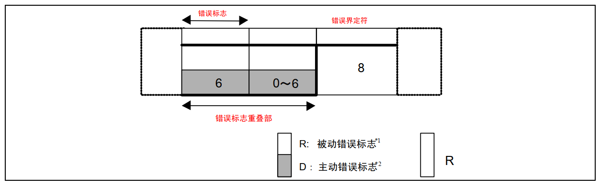
- 过载帧
当接收方收到大量数据而无法处理时，其可以发出过载帧，延缓发送方的数据发送，以平衡总线负载，避免数据丢失。
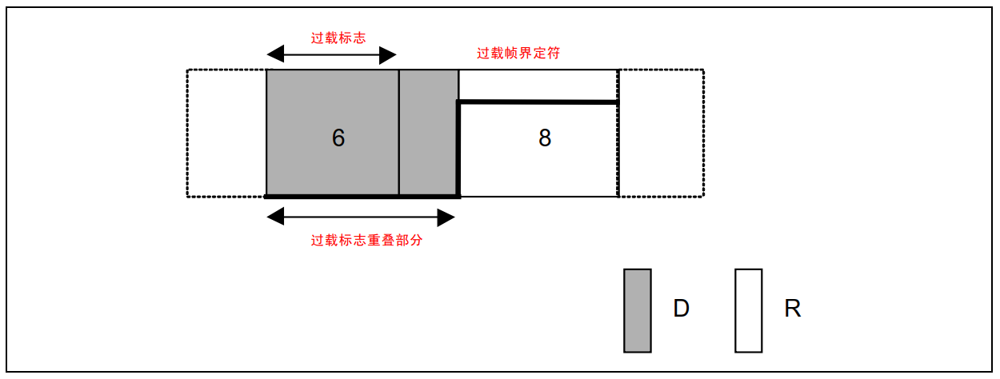
- 帧间隔
帧间隔是用于分隔数据帧和遥控帧的帧。数据帧和遥控帧可通过插入帧间隔将本帧与前面的任何帧（数据帧、遥控帧、错误帧、过载帧）分开。
过载帧和错误帧前不能插入帧间隔。
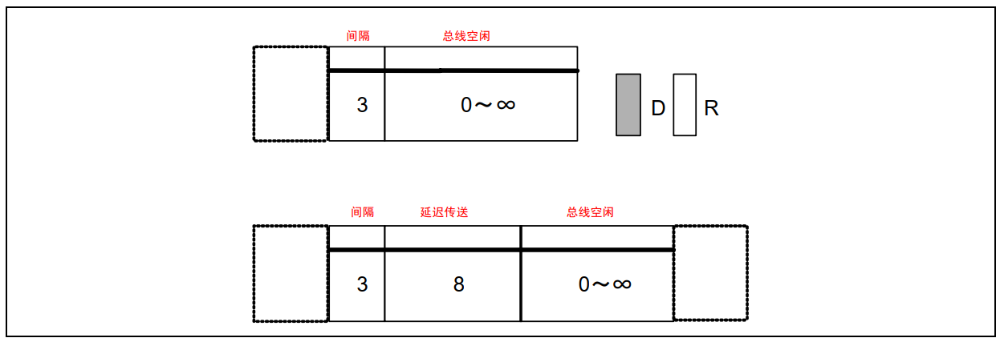
12.2.2 位填充¶
位填充规则 ：发送方每发送5个相同电平后，自动追加一个相反电平的填充位，接收方会自动移除填充位，恢复原始数据。
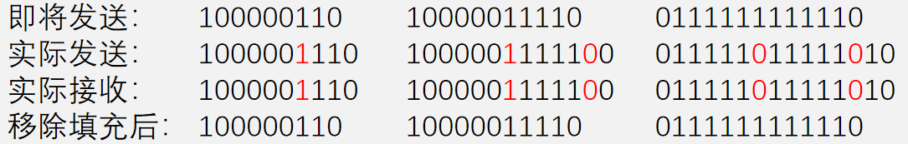
位填充的作用 ：
- 增加波形的定时信息，利于接收方执行 再同步 ，防止波形长时间无变化，导致接收方不能精确掌握数据采样时机。
- 将正常数据流与“错误帧”和“过载帧”区分开，标志“错误帧”和“过载帧”的特异性。
- 保持CAN总线在发送正常数据流时的活跃状态，防止被误认为总线空闲。
12.2.3 位时序¶
关于CAN总线的位时序如下，而理想情况： 接收方能依次采样到发送方发出的每个数据位，且采样点位于数据位中心附近 ，这也是位同步要做的事情。
- CAN总线没有时钟线，总线上的所有设备通过约定波特率的方式确定每一个数据位的时长。
- 发送方以约定的位时长每隔固定时间输出一个数据位。
- 接收方以约定的位时长每隔固定时间采样总线的电平，输入一个数据位。
接收方数据采样遇到的问题 ：
- 接收方以约定的位时长进行采样，但是采样点没有对齐数据位中心附近。
- 接收方刚开始采样正确，但是时钟有误差，随着误差积累，采样点逐渐偏离。
为了灵活调整每个采样点的位置，使采样点对齐数据位中心附近，CAN总线对每一个数据位的时长进行了更细的划分。
- 同步段（ SS: Synchronization Segment）
- 传播时间段（ PTS: Propagation Time Segment）
- 相位缓冲段 1（PBS1: Phase Buffer Segment 1）
- 相位缓冲段 2（PBS1: Phase Buffer Segment 2）
- 在同步补偿宽度（SJW: reSynchronization Jump Width）
一个数据位的构成如下图：
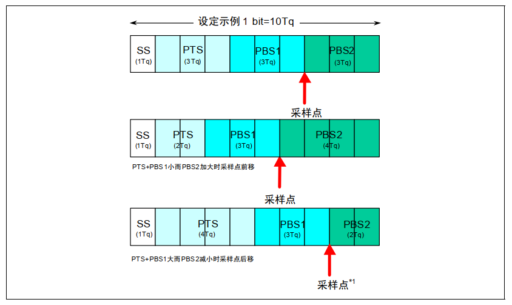
| 段名称（缩写） | 作用描述 | Tq数范围 |
|---|---|---|
| 同步段（SS） | 实现总线单元时序同步，调整收发同步性。信号边沿应优先出现在此段。 | 固定 1Tq |
| 传播时间段（PTS） | 补偿网络物理延迟（发送延迟+传播延迟+接收延迟），总延迟时间为各延迟和的两倍。 | 1~8Tq |
| 相位缓冲段1（PBS1） | 吸收各单元独立时钟的累积微小误差。 | 1~8Tq |
| 相位缓冲段2（PBS2） | 通过调整SJW（再同步补偿宽度）进一步吸收时钟误差，SJW增大会降低通信速度。 | 2~8Tq |
| 再同步补偿宽度（SJW） | 补偿时钟频率偏差和传输延迟导致的最大同步误差值。 | 1~4Tq（可配置） |
12.2.4 硬件同步¶
前面讲过，CAN总线把一位数据分成 5 段，相当于每个设备都有一个位的时序计时周期。
- 当总线上有一个设备要发数据，那么它将再 SS 段发送 SOF 帧起始，即一个逻辑电平下降沿。
- 而正常情况下，此时所以接收方应都处于 SS 段。
- 异常情况下，接收方会将自己的位时序计时周期拨到 SS 段的位置，这就是 硬件同步 。
需要注意：
- 硬同步只在帧的第一个下降沿（SOF下降沿）有效。
- 经过硬同步后，若发送方和接收方的时钟没有误差，则后续所有数据位的采样点必然都会对齐数据位中心附近。
- 若后续再出现误差，则需要使用后面的 再同步 。

12.2.5 再同步¶
若发送方或接收方的时钟有误差，随着误差积累，数据位边沿逐渐偏离 SS 段，则此时接收方根据再同步补偿宽度值（SJW）通过加长 PBS1 段，或缩短 PBS2 段，以调整同步。
如下图：
- 第一中情况（上半部分）
- 接收方时序快于发送方，增加 PBS1 段 2 个Tq，以确保下一位数据时时序同步。
- 第二种情况（下半部分）
- 接收方时序慢于发送方，增少 PBS2 段 2 个Tq，以确保下一位数据时时序同步。
- 注意
- SJW = 2，表示最多增加或减少 2 个Tq，具体减少或增加几个Tq需要根据误差和SJW值分析。
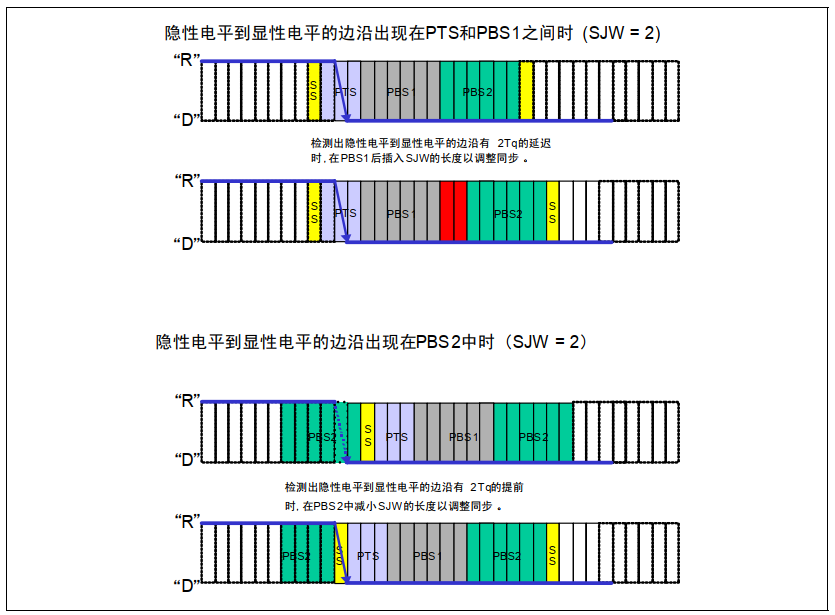
12.2.6 仲裁¶
当多个设备同时操作总线时，会出现冲突情况，主要分为两种：
- 在一个设备A发送数据帧/遥控帧过程中，另一个设备B也想要发送数据帧/遥控帧。(①使用先占先得)
- 两个设备同时准备发送数据帧/遥控帧。(②非破坏性仲裁)
①使用先占先得
⭐核心规则：任何设备检测到连续11个隐性电平，即认为总线空闲，只有在总线空闲时，设备才能发送数据帧/遥控帧。
有此规则后便会解决所以非同时操作总线的情况：
- 若当前已经有设备正在操作总线发送数据帧/遥控帧，则其他任何设备不能再同时发送数据帧/遥控帧（可以发送错误帧/过载帧破坏当前数据）。
- 同一时间只会有一个设备可以发送数据帧/遥控帧。
②非破坏性仲裁
⭐核心规则：若多个设备的发送需求同时到来或因等待而同时到来，则CAN总线协议会根据ID号（仲裁段）进行非破坏性仲裁，ID号小的（优先级高）取到总线控制权，ID号大的（优先级低）仲裁失利后将转入接收状态，等待下一次总线空闲时再尝试发送。
实现非破坏性仲裁需要的两个要求：
- 线与特性 ：总线上任何一个设备发送显性电平0时，总线就会呈现显性电平0状态，只有当所有设备都发送隐性电平1时，总线才呈现隐性电平1状态。
- 回读机制 ：每个设备发出一个数据位后，都会读回总线当前的电平状态，以确认自己发出的电平是否被真实地发送出去了。
非破坏性仲裁过程：
- 总线时所有要发送数据帧/遥控帧的设备( 同时发送 )发送一位数据并回读总线电平。
- 在仲裁段一定会逐渐出现回读的总线电平与自己发送的电平不一致的设备，这些设备都会 “意识到” 有其他设备使用总线，因此仲裁失利推出发送，转为接收状态。
Danger
将非破坏性仲裁过程普遍化，就会得到 ID号小的设备优先级高 的结论。

数据帧和遥控帧ID号一样时，数据帧的优先级高于遥控帧（看完图就明白了）。
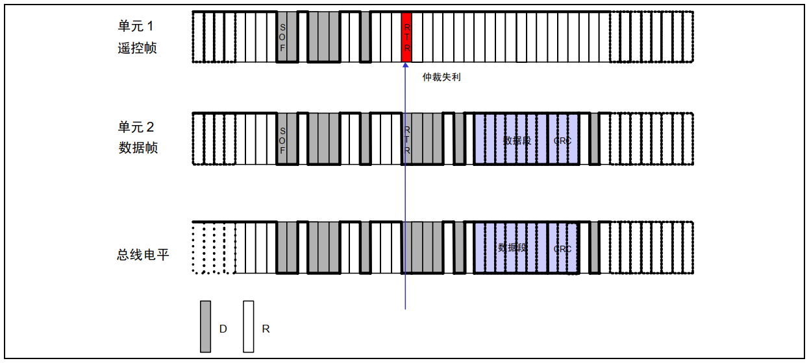
标准格式11位ID号和扩展格式29位ID号的高11位一样时，标准格式的优先级高于扩展格式（SRR必须始终为1，以保证此要求）
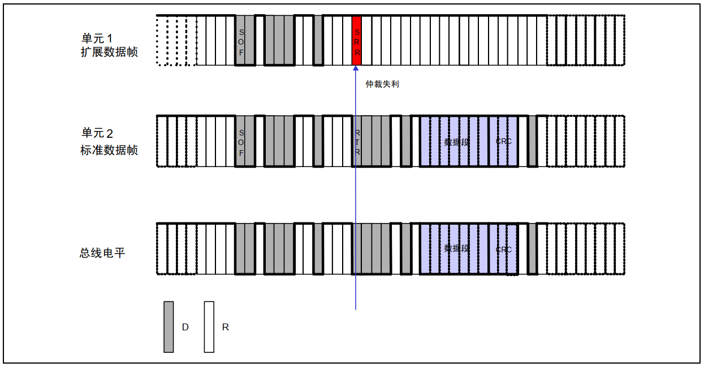
12.2.7 错误处理¶
错误类型
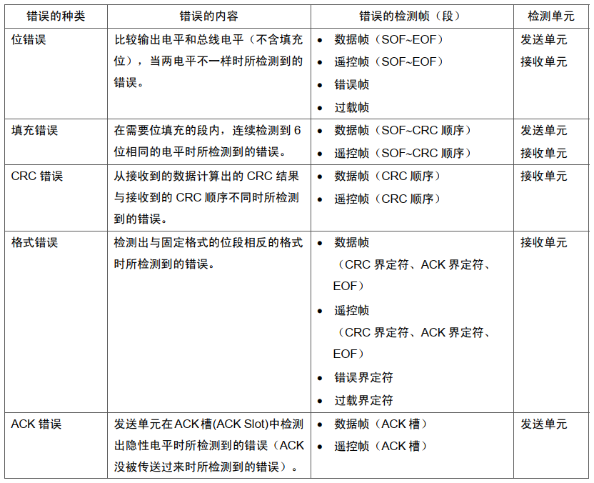
错误状态
- 主动错误状态的设备正常参与通信并在检测到错误时发出 主动错误帧 。
- 被动错误状态的设备正常参与通信但检测到错误时只能发出 被动错误帧 。
- 总线关闭状态的设备不能参与通信。
- 每个设备内部管理一个 TEC 和 REC ，根据 TEC 和 REC 的值确定自己的状态。
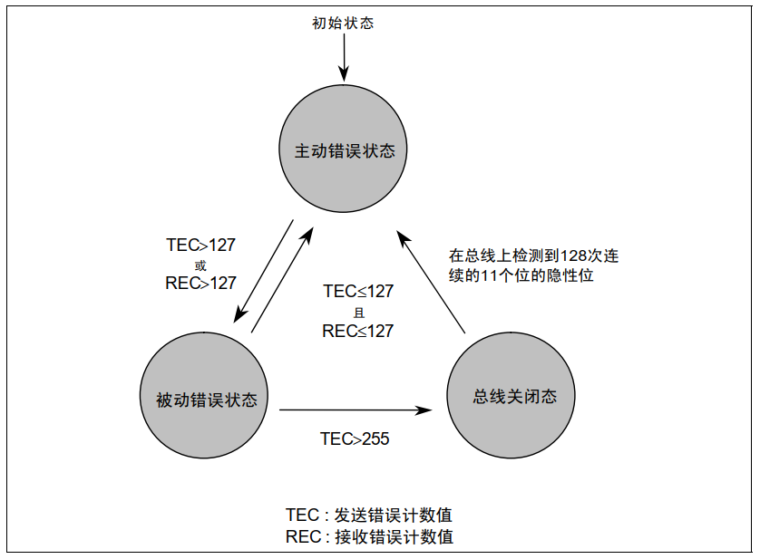
错误计数器
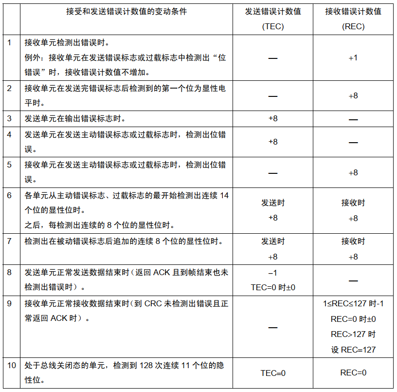
12.3 CAN总线外设¶
12.3.1 CAN外设简介¶
- STM32内置bxCAN外设（CAN控制器），支持CAN2.0A和2.0B，可以自动发送CAN报文和按照过滤器自动接收指定CAN报文，程序只需处理报文数据而无需关注总线的电平细节
- 波特率最高可达1兆位/秒
- 3个可配置优先级的发送邮箱
- 2个3级深度的接收FIFO
- 14个过滤器组（互联型28个）
- 时间触发通信、自动离线恢复、自动唤醒、禁止自动重传、接收FIFO溢出处理方式可配置、发送优先级可配置、双CAN模式
STM32F103C8T6 CAN资源：CAN1
STM32芯片内部仅集成了 CAN控制器 ，但我们仍然需要外接一个 CAN收发器 将逻辑电平转化为CAN需要的差分信号。
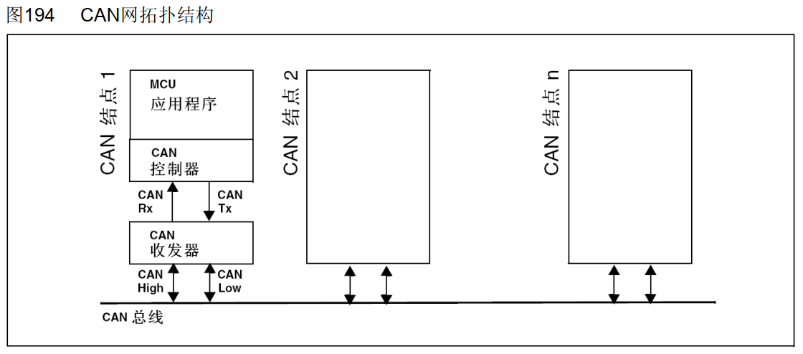
12.3.2 CAN框图¶
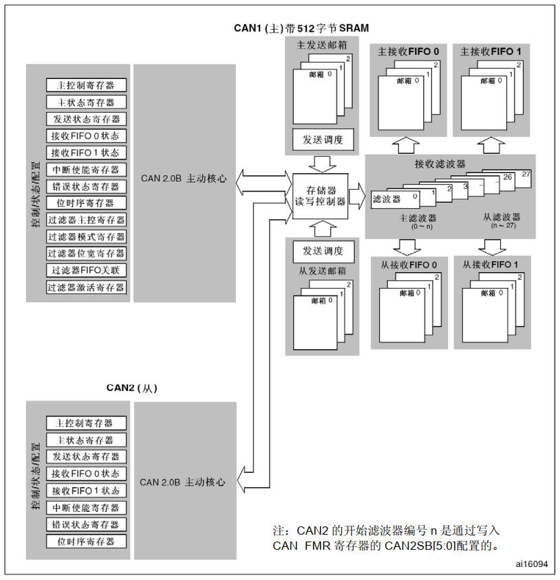
12.3.3 CAN基本结构¶

- 发送邮箱
- 可以配置 先占先行 或 报文ID小的先行 。
- 接收过滤器
- 用于过滤报文ID。
- 接收FIFO
- 两个FIFO没有优先级区别，可自行分配。
- 过滤后的报文ID存储在邮箱 0、1、2 这样的顺序，CPU处理邮箱 0 后，其余报文ID前移一位(和现实生活排队一样)。
- 当邮箱满了以后，来了新的报文ID，可以配置 舍弃新ID (启用了FIFO锁定功能 )或 舍弃末尾(邮箱2)ID (禁用FIFO锁定功能 )。
12.3.4 CAN收发过程¶
⭐①发送过程
发送过程的 发送邮箱状态 如下图所示，图中几个重要寄存器位可以在 STM32F10xxx参考手册 中查到：
CAN_TIxR寄存器的TXRQ位：由软件对其置 1 ，来请求发送邮箱的数据。当数据发送完成，邮箱为空时，硬件对其清 0 。CAN_TSR寄存器的RQCP0、RQCP1、RQCP2位：邮箱 x 请求完成，硬件接收到发送请求时对该位清 0 ；同时TXOKx、ALSTx和TERRx也被清 0 。CAN_TSR寄存器的TXOK0、TXOK1、TXOK2位：邮箱 x 发送成功，硬件对该位置 1 。CAN_TSR寄存器的TME0、TME1、TME2位：发送邮箱 x 空，硬件对该位置 1 。CAN_TSR寄存器的ABRQ0、ABRQ1、ABRQ2位：邮箱 x 终止发送，软件对该位置 1 ，可以中止邮箱 x 的发送请求。CAN_TSR寄存器的ALST0、ALST1、ALST2位：邮箱 x 仲裁丢失而导致发送失败，对该位置 1 。CAN_TSR寄存器的TERR0、TERR1、TERR2位：邮箱 x 因为出错而导致发送失败，对该位置 1 。
而理想的发送流程大致分为如下几步：
- 空置 -> 挂号 ：应用程序选择1个空置的发送邮箱，设置标识符，数据长度和待发送数据；然后
TXRQ置 1 请求发送，请求完成RQCP清 0 ，TXOK同时清零，邮箱非空TME也被清 0 。TXRQ置 1 邮箱马上进入挂号状态，并等待成为最高优先级的邮箱。 - 挂号 -> 预定 ：一旦邮箱成为最高优先级的邮箱，其状态就变为预定发送状态。
- 预定 -> 发送 ：一旦CAN总线进入空闲状态，预定发送邮箱中的报文就马上被发送(进入发送状态)。
- 发送 -> 空置 ：一旦邮箱中的报文被成功发送后，它马上变为空置邮箱，然后
RQCP、TXOK置 1 表示一次成功发送，同时发送邮箱空TME被硬件置 1 。
一些发送中的特殊情况：
- 发送失败 ：如果发送失败，由于仲裁引起的将
ALST位置 1 ，由于错误引起的就对TERR位置 1 。 - 发送优先级 ：挂号 -> 预定期间，优先级的判定可以是 报文ID大小 或 先占先得 。
- 终止发送请求 ：ABRQ位置 1 可以终止发送请求，如果处于挂号或预定状态，发送请求马上就被中止了。如果邮箱处于发送状态，那么中止请求可能导致2种结果。
- 如果邮箱中的报文被成功发送，那么邮箱变为空置邮箱，并且
TXOK位被硬件置 1 。 - 如果邮箱中的报文发送失败了，那么邮箱变为预定状态，然后发送请求被中止，邮箱变为空置邮箱且
TXOK位被硬件清 0 。
- 如果邮箱中的报文被成功发送，那么邮箱变为空置邮箱，并且
- 禁止自动重传 ：通过对
CAN_MCR寄存器的NART位置 1 ，来让硬件工作在该模式。 在该模式下，发送操作只会执行一次。如果发送操作失败了，不管是由于仲裁丢失或出错，硬件都不会再自动发送该报文。
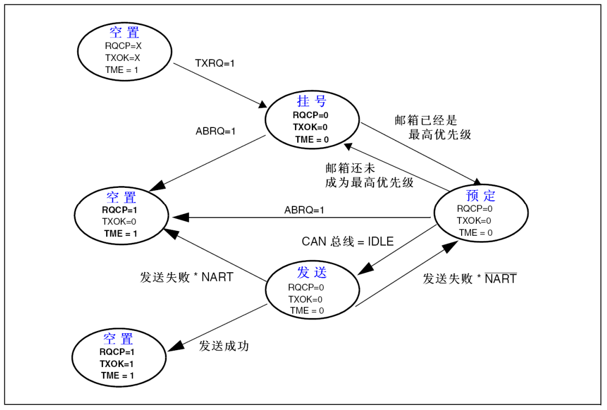
⭐②接收过程
接收到的报文，被存储在3级邮箱深度的FIFO中。 FIFO完全由硬件来管理，从而节省了CPU的处理负荷，简化了软件并保证了数据的一致性。应用程序只能通过读取FIFO输出邮箱，来读取FIFO中最先收到的报文。
- 有效报文 ：根据CAN协议， 当报文被正确接收(直到EOF域的最后一位都没有错误)， 且通过了标识符过滤，那么该报文被认为是有效报文。
FIFO管理流程：
- FIFO从空状态开始，在接收到第一个有效的报文后， FIFO状态变为挂号 1，硬件把
CAN_RFR寄存器的FMP[1:0]设置为 0x01。 - 软件可以读取FIFO输出邮箱来读出邮箱中的报文，然后通过对
CAN_RFR寄存器的RFOM位置 1 来释放邮箱，这样FIFO为空状态。 - 如果在释放邮箱的同时，又收到了一个有效的报文，那么FIFO仍然保留在挂号 1 状态；如果应用程序不释放邮箱，在接收到下一个有效的报文后， FIFO状态变为挂号 2 ，同时把
FMP[1:0]设置为 0x02（ 此处图中画错了，应是二进制的10 ）。
异常情况：
- 溢出 ：当FIFO处于挂号 3 状态，此时邮箱已满，下一个有效的报文就会导致溢出，并且一个报文会丢失。丢失会有两种情况，前面CAN基本结构讲过。
- 启用FIFO锁定功能：FIFO中最后收到的报文就被新报文所覆盖。
- 禁用FIFO锁定功能：FIFO新收到的报文就被丢弃。
- FIFO中断
- 一旦往FIFO存入一个报文，硬件就会更新
FMP[1:0]位，并且如果CAN_IER寄存器的FMPIE置为 1 ，那么就会产生一个中断请求。 - 当FIFO变满 时(即 第3个 报 文 被 存 入)，
CAN_RFR寄存器的FULL位就被置 1 ， 并且如果CAN_IER寄存器的FFIE置为 1 ，那么就会产生一个满中断请求。 - 在溢出的情况下，
FOVR位被置 1 ，并且如果CAN_IER寄存器的FOVIE置为 1 ，那么就会产生一个溢出中断请求。
- 一旦往FIFO存入一个报文，硬件就会更新

12.3.5 标识符过滤器¶
STM32的CAN外设提供了 14 个位宽可变的、可配置的过滤器组，每个过滤器组由 2 个 32 位寄存器，CAN_FxR0和CAN_FxR1组成。
配置一个过滤器组的工作模式的几个重要寄存器：
CAN_FS1R寄存器的FSCx位：过滤器位宽设置- 0：过滤器位宽为2个16位。
- 1：过滤器位宽为单个32位。
CAN_FM1R寄存器的FBMx位：过滤器模式- 0: 过滤器组x的2个32位寄存器工作在标识符屏蔽位模式。
- 1: 过滤器组x的2个32位寄存器工作在标识符列表模式。
经过FSCx位和FBMx位的排列组合，可以配置一个过滤器组的四种工作模式，如下图所示。
过滤器位宽 ：
- 对于 32 位过滤器，
CAN_FxR0和CAN_FxR1寄存器分别可以存入一个过滤报文ID。同时可以选配标准格式或扩展格式，STID的 11 存放标准格式其余补零，加上EXID的 18 位可以存放拓展格式；IDE为区分标准/扩展格式(置1)，RTR为区分数据帧和遥控帧(置1)。 - 对于 16 位过滤器，只能存放标准格式。
工作模式 ：
- 标识符列表模式，只能过滤通过与
CAN_FxR0和CAN_FxR1寄存器存放的报文ID中的一个完全一致地报文ID。
- 标识符屏蔽位模式，可以设置报文ID的屏蔽码，其中屏蔽码为 1 的为需完全一致，屏蔽码为 0 的位对应的报文ID位可以为任意值。
- 例如，报文ID为 0x100 -> 0x10F，则写入寄存器过滤ID：0x100，屏蔽码：110...。
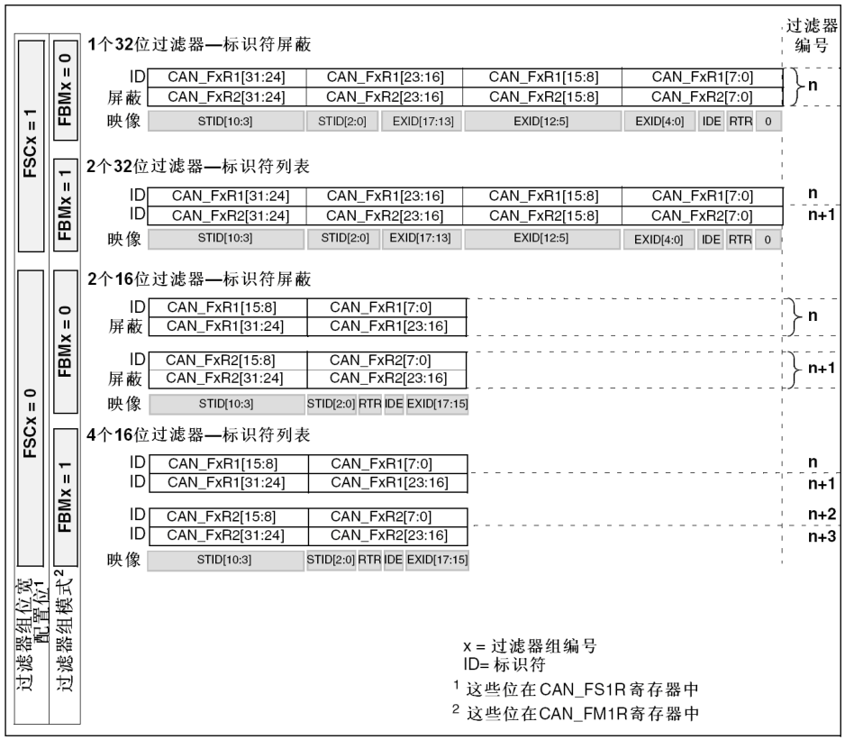
12.3.6 测试模式¶
- 静默模式 ：用于分析CAN总线的活动，不会对总线造成影响。
- 环回模式 ：用于自测试，同时发送的报文可以在CAN_TX引脚上检测到。
- 环回静默模式 ：用于热自测试，自测的同时不会影响CAN总线。
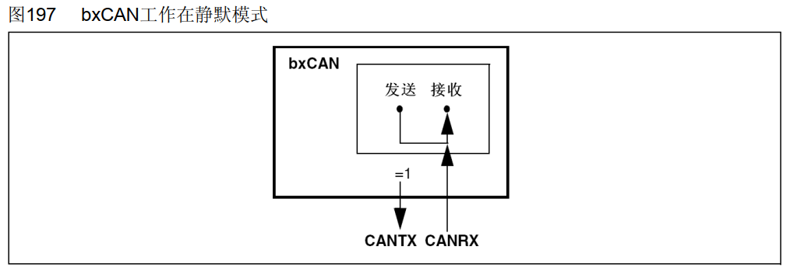
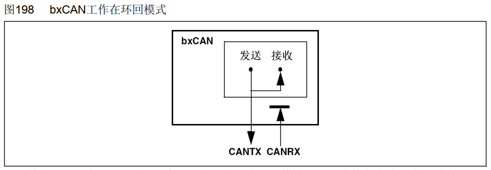
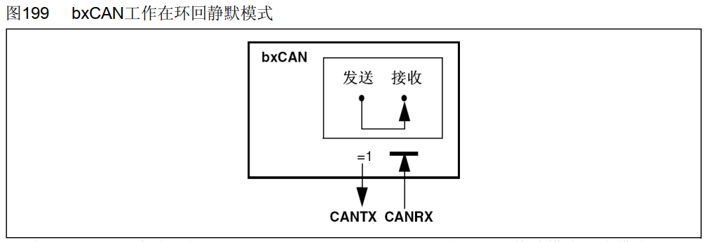
12.3.7 工作模式¶
- 初始化模式 ：用于配置CAN外设，禁止报文的接收和发送。
- 正常模式 ：配置CAN外设后进入正常模式，以便正常接收和发送报文。
- 睡眠模式 ：低功耗，CAN外设时钟停止，可使用软件唤醒或者硬件自动唤醒。
- AWUM ：置1，自动唤醒，一旦检测到CAN总线活动，硬件就自动清零SLEEP，唤醒CAN外设；置0，手动唤醒，软件清零SLEEP，唤醒CAN外设。
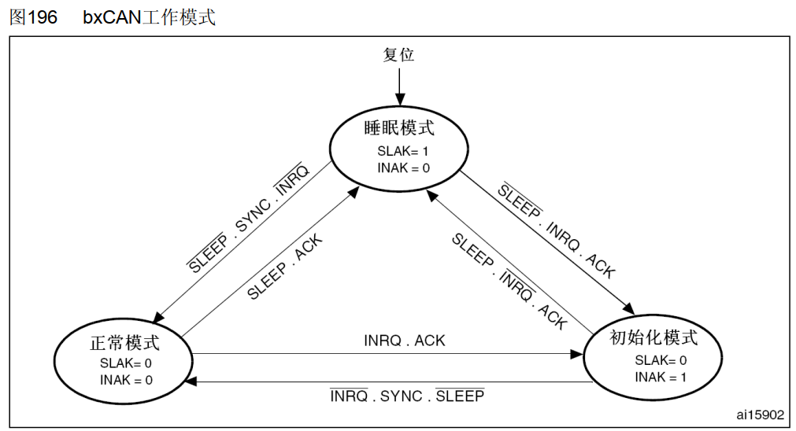
12.3.8 位时序¶
STM32规定的位时序与CAN协议稍有不同，STM32将 PBS1 和 PTS 合并成 BS1 段，其余均一致。
- SS段：1Tq
- BS1段：1-16Tq
- BS2段：1-8Tq
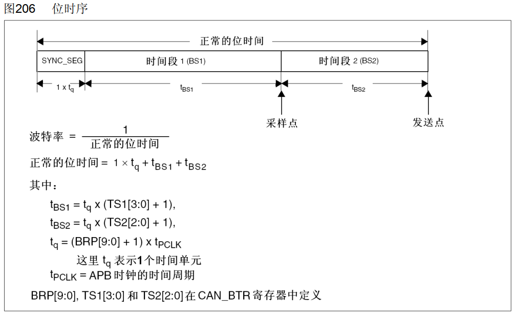
波特率计算公式如下：
波特率 = APB1时钟频率(36MHZ) / 分频系数 / 一位的Tq数量
公式说明：
- 分频系数 =
brp[9:0] + 1
（brp为 10 位分频寄存器值，范围 0-1023） - 一位的TQ数量 =
1 + (ts1[3:0] + 1) + (ts2[2:0] + 1)
（ts1和ts2分别为时间段1和时间段2的寄存器值，ts1为 4 位，ts2为 3 位）
12.3.9 中断¶
CAN外设占用4个专用的中断向量：
- 发送中断：发送邮箱空时产生。
- FIFO 0中断：收到一个报文/FIFO 0满/FIFO 0溢出时产生。
- FIFO 1中断：收到一个报文/FIFO 1满/FIFO 1溢出时产生。
- 状态改变错误中断：出错/唤醒/进入睡眠时产生。
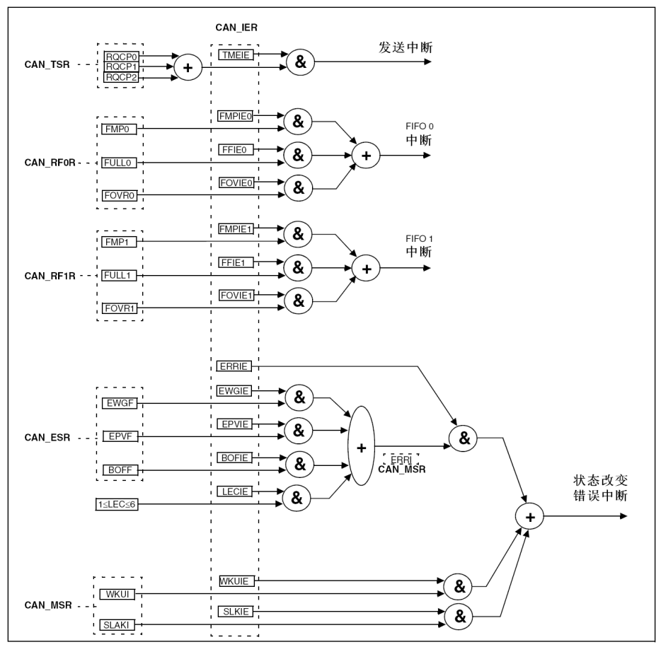
12.3.10 时间触发通信¶
- TTCM：置1，开启时间触发通信功能；置0，关闭时间触发通信功能。
- CAN外设内置一个16位的计数器，用于记录时间戳。
- TTCM置1后，该计数器在每个CAN位的时间自增一次，溢出后归零。
- 每个发送邮箱和接收FIFO都有一个TIME[15:0]寄存器，发送帧SOF时，硬件捕获计数器值到发送邮箱的TIME寄存器，接收帧SOF时，硬件捕获计数器值到接收FIFO的TIME寄存器。
- 发送邮箱可配置TGT位，捕获计数器值的同时，也把此值写入到数据帧数据段的最后两个字节，为了使用此功能，DLC必须设置为8。
12.3.11 错误处理¶
在这里STM32加了一个小功能，相当于在离线和错误主动间加了一个可控制的开关ABOM。
ABOM置 1，开启离线自动恢复，进入离线状态后，就自动开启恢复过程；ABOM置 0，关闭离线自动恢复，软件必须先请求进入然后再退出初始化模式，随后恢复过程才被开启
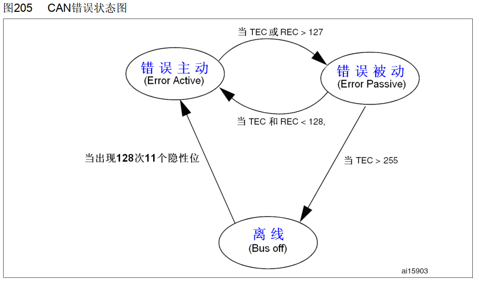
12.4 STM32CubeMX参数¶
12.4.1 CAN初始化¶
与CAN外设相关的参数配置：
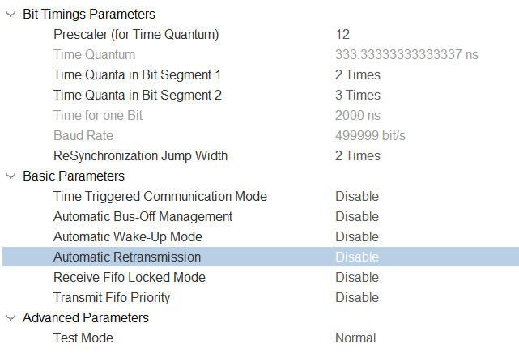
- Prescaler
分频系数，用于确定一个Tq的时间、波特率。此时波特率为 500kbps，使用高速CAN波特率要大于125kbps。
- Time Quanta in Bit Segment 1
BS1段，2Tq。
-
Time Quanta in Bit Segment 2
BS2段，3Tq。
- ReSynchronization Jump width
SWJ，2Tq。
-
Time Triggered Communication Mode = Disable
禁用时间触发模式，采用经典的事件驱动CAN通信。
-
Automatic Bus-Off Management = Disable
禁用自动总线关闭恢复，需软件手动处理总线错误（如调用
CAN_RecoveryFromBusOff()）。
- Automatic Wake-Up Mode = Disable
禁用自动唤醒模式。
-
Automatic Retransmission = Disable
禁用 非自动重传 ，发送失败时需应用层处理重发逻辑，适用于严格时序控制场景（如实时系统）。
-
Receive FIFO Locked Mode = Disable
接收FIFO溢出时新数据覆盖旧数据，而非锁定FIFO。
-
Transmit FIFO Priority = Disable
发送优先级由报文标识符（ID）决定，而非FIFO顺序。
Danger
注意，Automatic Retransmission 配置的是非自动重传模式，详情见CAN初始化结构体注释。
12.4.2 过滤器初始化¶
由于STM32CubeMX并没有提供过滤器的初始化配置，需要我们手动添加。
在生成的can.c文件中，添加过滤器配置部分，注意加的位置防止下次生成代码被覆盖，此时过滤器会通过所有ID，更详细的配置会在代码部分使用。
/* CAN init function */
void MX_CAN_Init(void) {
/* USER CODE BEGIN CAN_Init 0 */
/* USER CODE END CAN_Init 0 */
/* USER CODE BEGIN CAN_Init 1 */
/* USER CODE END CAN_Init 1 */
hcan.Instance = CAN1;
hcan.Init.Prescaler = 12;
hcan.Init.Mode = CAN_MODE_LOOPBACK;
hcan.Init.SyncJumpWidth = CAN_SJW_2TQ;
hcan.Init.TimeSeg1 = CAN_BS1_2TQ;
hcan.Init.TimeSeg2 = CAN_BS2_3TQ;
hcan.Init.TimeTriggeredMode = DISABLE;
hcan.Init.AutoBusOff = DISABLE;
hcan.Init.AutoWakeUp = DISABLE;
hcan.Init.AutoRetransmission = DISABLE;
hcan.Init.ReceiveFifoLocked = DISABLE;
hcan.Init.TransmitFifoPriority = DISABLE;
if (HAL_CAN_Init(&hcan) != HAL_OK) {
Error_Handler();
}
/* USER CODE BEGIN CAN_Init 2 */
// 启用CAN功能⭐
HAL_CAN_Start(&hcan);
// 过滤器组，单CAN取值范围0~13
canFilter.FilterBank = 0;
// 过滤器标识符高16位
canFilter.FilterIdHigh = 0x0000;
// 过滤器标识符低16位
canFilter.FilterIdLow = 0x0000;
// 过滤器掩码号或标识号高16位
canFilter.FilterMaskIdHigh = 0x0000;
// 过滤器掩码号或标识号低16位
canFilter.FilterMaskIdLow = 0x0000;
// 过滤器字宽
canFilter.FilterScale = CAN_FILTERSCALE_32BIT;
// 过滤器工作模式
canFilter.FilterMode = CAN_FILTERMODE_IDMASK;
// canFilter.SlaveStartFilterBank = x; // 双CAN时从CAN选择过滤器组，单个CAN此参数无意义
// 报文ID存在FIFO0还是FIFO1
canFilter.FilterFIFOAssignment = CAN_FILTER_FIFO0;
// 激活过滤器
canFilter.FilterActivation = CAN_FILTER_ENABLE;
if (HAL_CAN_ConfigFilter(&hcan, &canFilter) != HAL_OK) {
Error_Handler();
}
/* USER CODE END CAN_Init 2 */
}
12.5 CAN实战¶
12.5.1 单设备环回测试¶
修改工作模式为环回测试模式：
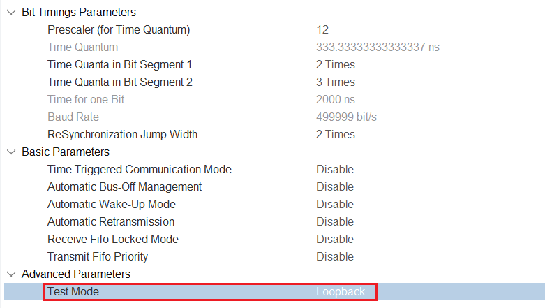
添加过滤器配置(和上一节一样，不再展示)。
封装CAN发送和接收函数驱动，可以单独创建一个文件，也可以直接再can.c中添加，我选择前者：
#include "can_fd.h"
/**
* @brief 发送消息
*
* @param ID 报文ID
* @param Length 消息长度(0~8)
* @param pData 数据指针，可以传入一个数组
* @retval 1:发送成功; 0:发送失败; -1:Length过大
* */
uint8_t CAN_FD_SendMessage(uint32_t ID, uint8_t Length, uint8_t* pData) {
/* 初始化消息头 */
if (Length > 8) {
return -1;
}
/* 初始化消息头 */
CAN_TxHeaderTypeDef TxMessage = {
// 标准格式ID
.StdId = ID,
// 扩展格式ID
.ExtId = 0,
// 远程请求位，区分数据帧(0)和遥控帧(1)
.RTR = CAN_RTR_DATA,
// 扩展标志位，区分标准格式(0)和扩展格式(1)，选用一致格式则另一种格式的ID无效
.IDE = CAN_ID_STD,
// 数据长度
.DLC = Length,
.TransmitGlobalTime = DISABLE
};
/* 传输数据 */
// 接收使用的邮箱号
uint32_t TxMailbox;
if (HAL_CAN_AddTxMessage(&hcan, &TxMessage, pData, &TxMailbox) == HAL_OK) {
return 1;
} else {
return 0;
}
/* 等待数据传输完成 */
// uint32_t timeout = 0;
// while (HAL_CAN_IsTxMessagePending(&hcan, TxMailbox) != 0) {
// // 超时退出
// timeout ++;
// if (timeout < 10000) {
// break;
// }
// }
}
/**
* @brief 接收FIFO0邮箱非空标志
*
* @retval 1:邮箱非全空; 0:邮箱全空
* */
uint8_t CAN_FD_ReceiveFlag(void) {
if (HAL_CAN_GetRxFifoFillLevel(&hcan, CAN_RX_FIFO0) > 0) {
return 1;
} else {
return 0;
}
}
/**
* @brief 接收消息
*
* @param pID 将收到的消息的报文ID存于此变量
* @param pLength 将收到的消息的数据长度存于此变量
* @param pData 将收到的消息的数据存于此变量
* @retval 无
* */
uint8_t CAN_FD_ReceiveMessage(uint32_t* pID, uint8_t* pLength, uint8_t* pData) {
CAN_RxHeaderTypeDef RxMessage;
/* 接收数据 */
if (HAL_CAN_GetRxMessage(&hcan, CAN_RX_FIFO0, &RxMessage, pData) != HAL_OK) {
return 0;
}
// 判断是标准格式还是扩展格式
if (RxMessage.IDE == CAN_ID_STD) {
*pID = RxMessage.StdId;
} else {
*pID = RxMessage.ExtId;
}
if (RxMessage.RTR == CAN_RTR_DATA) {
*pLength = RxMessage.DLC;
}
return 1;
}
主函数中，完成自发自收程序，能够正常接收即可。此处，我使用了FreeRTOS，若使用裸机开发，把循环中的程序改到main.c循环，变量定义放循环外面，vTaskDelay改为HAL_Delay即可，有能力的可以加按键控制，而非定时循环发送。
// CAN_FD任务
void CAN_FdTask(void *argument) {
/* 发送部分初始化变量 */
uint32_t TxID = 0x123;
uint8_t TxLength = 4;
uint8_t TxData[] = {0x32, 0xA8, 0x44, 0x71};
/* 接收部分初始化变量 */
uint32_t RxID = 0;
uint8_t RxLength = 0;
uint8_t RxData[8] = {0};
/* 显示发送/循环次数 */
uint32_t num = 0;
while (1) {
/* 发送消息 */
uint8_t status = CAN_FD_SendMessage(TxID, TxLength, TxData);
OLED_ShowNum(0, 0, status,1, 8);
vTaskDelay(100);
/* 接收并显示消息 */
status = CAN_FD_ReceiveMessage(&RxID, &RxLength, RxData);
OLED_ShowNum(20, 0, status,1, 8);
OLED_ShowNum(0, 1, RxID, 4, 8);
OLED_ShowNum(20, 1, RxLength, 2, 8);
OLED_ShowNum(40, 1, RxData[0], 3, 8);
OLED_ShowNum(60, 1, RxData[1], 3, 8);
OLED_ShowNum(80, 1, RxData[2], 3, 8);
OLED_ShowNum(100, 1, RxData[3], 3, 8);
/* 循环计数 */
num++;
OLED_ShowNum(0, 2, num, 3, 16);
vTaskDelay(1500);
}
}
12.5.2 多设备互相通信¶
CAN工作模式改为正常模式即可。
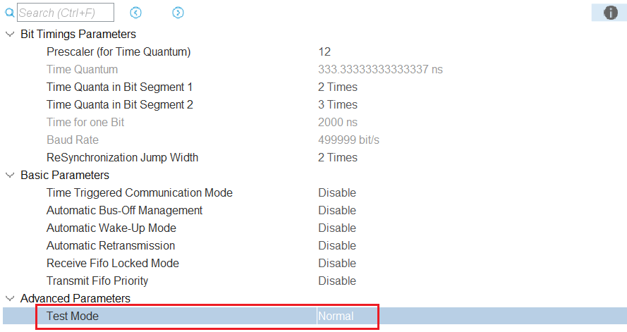
剩下的就是将硬件连接好，一定注意STM32芯片只集成了CAN控制器，并没有CAN收发器(将逻辑电平转化为差分信号)，若使用最新系统板可以参考江科大的接线图：

或者可以自己设计、购买集成CAN收发器的开发板。
12.5.3 数据/遥控帧+标准/扩展格式¶
修改CAN_FD收发函数
/**
* @brief 发送消息
*
* @param ID 报文ID
* @param TxMessage Tx消息头结构体 CAN_TxHeaderTypeDef
* @param pData 数据指针，可以传入一个数组
* @retval 1:发送成功; 0:发送失败; -1:Length过大
* */
uint8_t CAN_FD_SendMessage(CAN_TxHeaderTypeDef* TxMessage, uint8_t* pData) {
/* 传输数据 */
// 接收使用的邮箱号
uint32_t TxMailbox;
if (HAL_CAN_AddTxMessage(&hcan, TxMessage, pData, &TxMailbox) == HAL_OK) {
return 1;
} else {
return 0;
}
/* 等待数据传输完成 */
// uint32_t timeout = 0;
// while (HAL_CAN_IsTxMessagePending(&hcan, TxMailbox) != 0) {
// // 超时退出
// timeout ++;
// if (timeout < 10000) {
// break;
// }
// }
}
/**
* @brief 接收消息
*
* @param RxMessage Rx消息头结构体 CAN_RxHeaderTypeDef
* @param pData 将收到的消息的数据存于此变量
* @retval 无
* */
uint8_t CAN_FD_ReceiveMessage(CAN_RxHeaderTypeDef* RxMessage, uint8_t* pData) {
/* 接收数据 */
if (HAL_CAN_GetRxMessage(&hcan, CAN_RX_FIFO0, RxMessage, pData) != HAL_OK) {
return 0;
}
return 1;
}
主函数中定义消息头结构体，可以根据IDE和RTR排列组合，发送数据/遥控帧+标准/扩展格式。
// CAN_FD任务
void CAN_FdTask(void *argument) {
/* 发送部分初始化变量 */
CAN_TxHeaderTypeDef TxMessage = {
.StdId = 0x123,
.ExtId = 0x000,
.IDE = CAN_ID_STD, //或CAN_ID_EXT
.RTR = CAN_RTR_DATA, //或CAN_RTR_REMOTE
.DLC = 4,
.TransmitGlobalTime = DISABLE,
};
uint8_t TxData[] = {0x12, 0x98, 0x24, 0x51};
/* 接收部分初始化变量 */
CAN_RxHeaderTypeDef RxMessage = {0};
uint8_t RxData[8] = {0};
/* 显示发送/循环次数 */
uint32_t num = 0;
while (1) {
/* 发送消息 */
uint8_t status = CAN_FD_SendMessage(&TxMessage, TxData);
OLED_ShowNum(0, 0, status,1, 8);
vTaskDelay(100);
/* 接收并显示消息 */
status = CAN_FD_ReceiveMessage(&RxMessage, RxData);
OLED_ShowNum(20, 0, status,1, 8);
OLED_ShowNum(0, 1, RxMessage.StdId, 4, 8);
OLED_ShowNum(20, 1, RxMessage.DLC, 2, 8);
OLED_ShowNum(40, 1, RxData[0], 3, 8);
OLED_ShowNum(60, 1, RxData[1], 3, 8);
OLED_ShowNum(80, 1, RxData[2], 3, 8);
OLED_ShowNum(100, 1, RxData[3], 3, 8);
/* 循环计数 */
num++;
OLED_ShowNum(0, 2, num, 3, 16);
vTaskDelay(1500);
}
}
12.5.4 标识过滤器使用¶
根据江科大PPT中的过滤器示例，可以尝试验证这些过滤器功能：
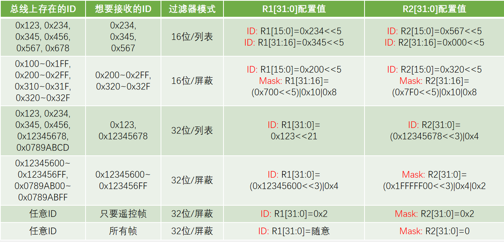
需注意，使用扩展格式和遥控帧时需要配置RTR和IDE位，即遥控帧需要ID | 0x10，扩展格式需要ID | 0x08。
使用过滤器修改can.c的过滤器配置即可：
/* USER CODE BEGIN CAN_Init 2 */
// 启用CAN功能⭐
HAL_CAN_Start(&hcan);
// 过滤器组，单CAN取值范围0~13
canFilter.FilterBank = 0;
// 过滤器标识符高16位
canFilter.FilterIdHigh = 0x0000;
// 过滤器标识符低16位
canFilter.FilterIdLow = 0x0000;
// 过滤器掩码号或标识号高16位
canFilter.FilterMaskIdHigh = 0x0000;
// 过滤器掩码号或标识号低16位
canFilter.FilterMaskIdLow = 0x0000;
// 过滤器字宽
canFilter.FilterScale = CAN_FILTERSCALE_32BIT;
// 过滤器工作模式
canFilter.FilterMode = CAN_FILTERMODE_IDMASK;
// canFilter.SlaveStartFilterBank = x; // 双CAN时从CAN选择过滤器组，单个CAN此参数无意义
// 报文ID存在FIFO0还是FIFO1
canFilter.FilterFIFOAssignment = CAN_FILTER_FIFO0;
// 激活过滤器
canFilter.FilterActivation = CAN_FILTER_ENABLE;
if (HAL_CAN_ConfigFilter(&hcan, &canFilter) != HAL_OK) {
Error_Handler();
}
/* USER CODE END CAN_Init 2 */
FilterIdHigh和FilterIdLow位R1寄存器，FilterMaskIdHigh和FilterMaskIdLow为R2寄存器。
12.5.5 收发策略¶
①发送部分
- 定时发送（配置定时器，定时结束中断置标志位，主循环检查标志位发送数据帧消息）
- 触发发送（按键或其他触发源被触发，置标志位，主循环检查标志位发送数据帧消息）
- 请求发送（请求方发送遥控帧，发送方收到指定ID的遥控帧，发送数据帧消息）
②接收部分
- 请求发送（发送遥控帧，请求对方发送数据帧消息）
- 轮询接收
- 中断接收
12.5.6 中断使用¶
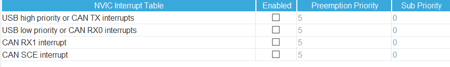
- USB high priority or CAN TX interrupts：发送中断
- USB low priority or CAN RX0 interrupts：FIFO0中断
- CAN RX1 interrupt：FIFO1中断
- CAN SCE interrupt：错误中断